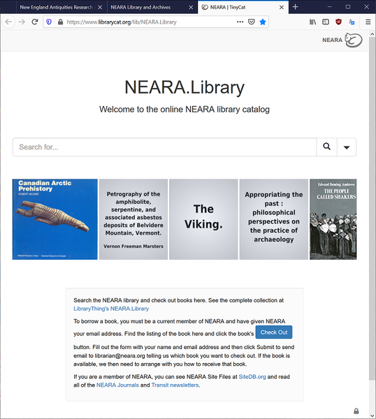
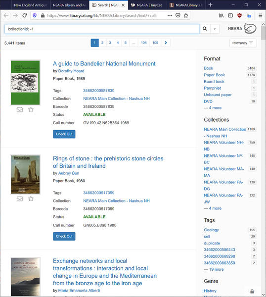
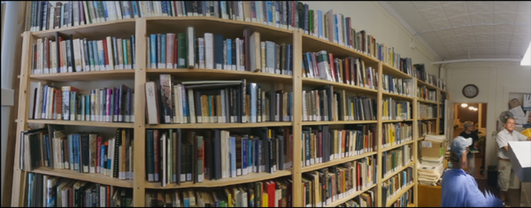
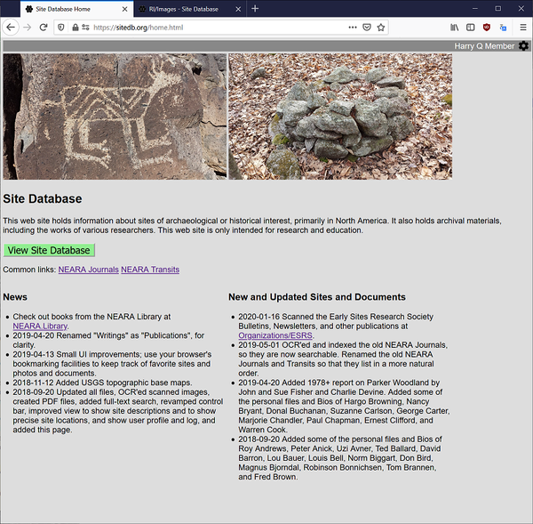
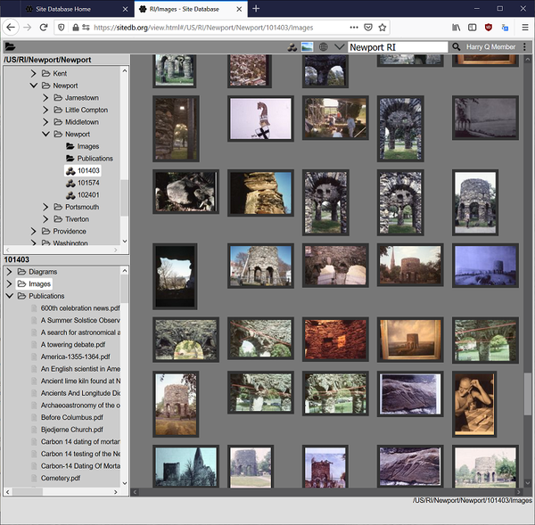
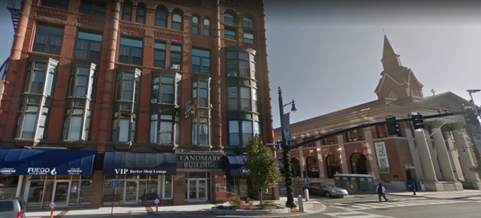

The NEARA Meggers Library and Archives offers a unique opportunity for members to research a wide array of subjects related to antiquity across the globe, focusing on lithic structures and cultures of northeastern US and eastern Canada. In addition to the non-circulating volumes of our Special Collection, several thousand circulating volumes are available for loan to members.
We have a broad collection of titles relating to ethnology, early seafaring, Native American topics, landscape studies, archaeology, archaeoastronomy, petroglyphs, comparative religion, history, megaliths, mythology, and ancient civilizations.
View our collection online at: NEARA Library. You can also browse our complete collection online at: NEARA Library catalog.
 
Or go directly to: NEARA Library search. For more complicated searches, go to: Advanced Search.Try searching particular Library of Congress call letter + number categories. Popular categories for NEARA are:
You can reserve books now for pick-up at the next conference, or we can arrange for some other way to get the books to you. But note that some of the books in our collection are non-circulating, even though they may currently be listed as "Available".
The move to the space in Nashua means we are deaccessioning some duplicate and extraneous titles. These books and videos will be offered for sale to members online and at conferences. To see the collection of books that we are deaccessioning, look at the list of NEARA Library books for sale. This list will be updated occasionally, so come back to see what new books have been added to it. You can reserve books now for purchase at the next conference, or we can arrange for some other way to get the books to you.
The NEARA Archives include many documents of the organization, including Site File reports describing various interesting sites in the northeast. It also holds some of the personal notes and correspondence of many prominent NEARA researchers.
We are in the midst of digitizing the NEARA Archives. If you are a member of NEARA you can see photos and some of the documents at SiteDB.org. See how sites and people(!) looked like back in the 1960's - 1980's.
 Due to the sensitive nature of many of the documents, such as the Site Reports, we have limited access to them. Tell us what research you want to do. If we do not know you well, it would help to get the support of a member of the Board of Directors, such as a Chapter Coordinator.
Please submit site reports to the NEARA Archivist. We are no longer accepting paper reports, but we have not yet implemented online site report forms.
If you are a member of NEARA you can read all of the Journals and Transits that NEARA has ever published, at SiteDB.org. For an introduction to the site, please read Introduction. Access policies are at Archives Policies.
The NEARA library is located at 142 Main St., Nashua New Hampshire, in room 215 of the Landmark Building. View NEARA on Google Maps.
Contact the NEARA Librarian to schedule a visit. Metered parking is available on the street or in a parking garage on the next block west of Main St. Numerous dining options are available downtown.